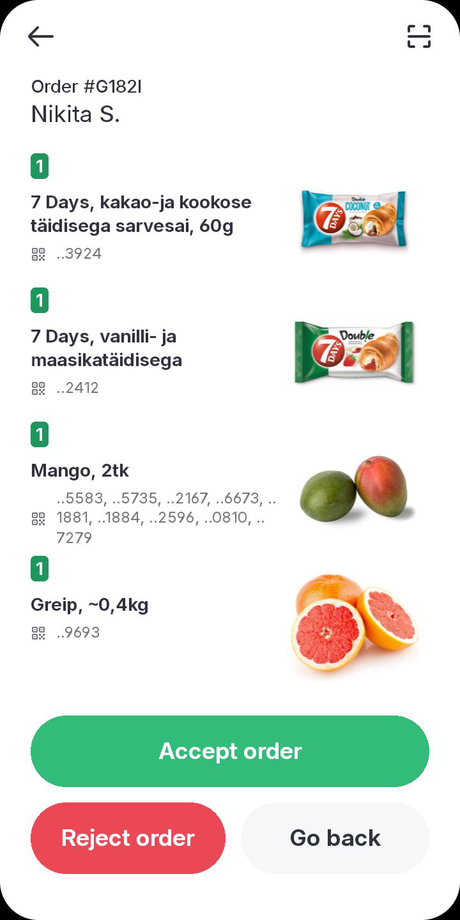
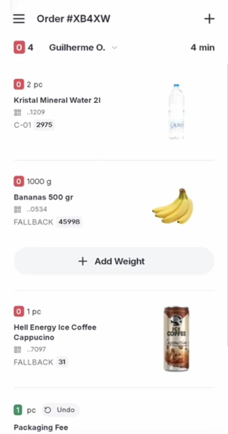
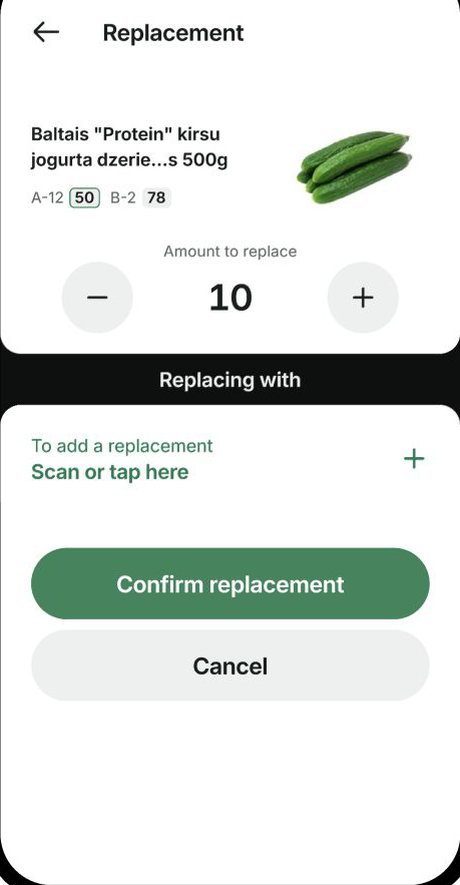
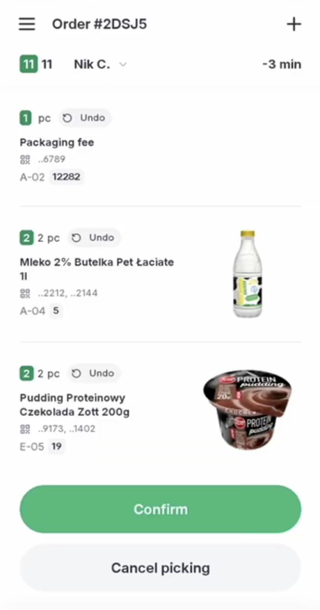

Інтеграція Назва партнера з Bolt Food
Два операційні варіанти для ритейлу та магазинів. Різниця — хто керує замовленням і де його збирають.
Як проходить інтеграція
Покроковий план — від знайомства до запуску
Послідовність однакова для обох варіантів. Обсяг робіт залежить від формату та маршруту. Техпідготовку ведемо паралельно з договором.
Знайомство
Kick-off: фіксуємо мету, ринок і орієнтовні терміни запуску.
Формат інтеграції
Обираємо 1-way (Bolt Picker) чи 2-way (замовлення приймає ваша система).
Маршрут підключення
Напряму до Bolt API чи через Corezoid — він бере комунікацію з HQ на себе.
Опитувальник + NDA
Партнер заповнює свою копію опитувальника (каталог API/SFTP, webhooks, магазини). Шаблон: Google Doc.
Тестове середовище
Команда Bolt створює тест і видає доступи (integrator_id, secret_key, provider_id).
Тестові замовлення
Проганяємо повний цикл на своєму асортименті: каталог, прийняття, збірка, заміни, статуси.
Запуск (live)
Створюємо реальні магазини, переносимо на прод і стартуємо перший.
Масштабування
Підключаємо решту магазинів групами до повної мережі.
Ключовий принцип
Каталог і потік замовлення — це різні речі
Спершу передаємо асортимент. Окремо обираємо, як оброблятимуться замовлення.
Асортимент і наявність
Категорії, товари, ціни, промоціни та залишки — через погоджений канал: API або файловий обмін (SFTP). Потрібно в обох варіантах.
Залишки — зазвичай щогодини, ціни — 1–2 рази на тиждень.
Операції із замовленням
Саме тут обираємо 1-way або 2-way: хто приймає замовлення, збирає його та змінює статуси.
Варіанти співпраці
Два операційні варіанти
Каталог синхронізується в обох. Далі обираємо, як оброблятимуться замовлення в магазині.
1-way + Bolt Picker
Прийняття і збірка в Picker App на пристрої Sunmi
- Прийняття, збір і готовність — у Picker App на Sunmi. Можна ввімкнути автоприйняття.
- Заміни й часткові замовлення працюють у процесі збору; різницю повертають покупцеві автоматично.
- За бажанням Bolt може повідомляти партнера про замовлення, але відповіді від його системи не чекає.
- Потрібні штрихкоди товарів і пристрої Sunmi L2s зі сканером: 100 грн / тиждень за 1 девайс або 200 € викуп.
2-way без пікерів
Прийняття й обробка — у вашому середовищі
- 2-way інтеграція: замовлення надходять у вашу систему; ви відповідаєте прийняти / відхилити / готове.
- У партнера має бути власне середовище для прийняття й опрацювання замовлень (WMS / POS / picker) — без Bolt Picker.
- Ви керуєте доступністю магазину: активний / неактивний, години, пауза.
- Не поєднується з Bolt Picker: заміни кошика узгоджуються й реалізуються окремо.
Архітектура підключення
Напряму до Bolt або через Corezoid
Окремий вибір від 1-way / 2-way. Документація API: developer.bolt.eu
Пряме підключення до Bolt Food API
REST API · webhooks · авторизація на боці партнера
- Партнер підключається до Bolt API за документацією на developer.bolt.eu.
- Партнер сам підтримує webhooks, авторизацію та повторні спроби.
- Комунікація з глобальною командою Bolt — англійською напряму в Slack.
Corezoid — наш інтегратор
Corezoid тримає мапінг даних і звʼязок з HQ Bolt
- Corezoid — посередник між вашою системою і Bolt Food.
- Бере на себе технічну комунікацію з HQ Bolt під час інтеграції.
- Робить мапінг даних, авторизацію та маршрутизацію запитів.
- Для каталогу: забирає дані з API партнера або приймає webhooks.
Як працює Bolt Picker
Збірка замовлення в кілька кроків
Стосується Варіанта 1. Реальні екрани Bolt Picker на пристрої Sunmi L2s.

Прийняти замовлення
Список позицій · автоприйняття

Зібрати й просканувати
Штрихкод · вагові через «Add weight»

Заміна або відсутність
Альтернатива не дорожча за оригінал

Підтвердити збір
Замовлення готове · передача курʼєру
Порівняння
Чим відрізняються варіанти
Основні відмінності — хто керує замовленням, як збирають і чи потрібні пристрої Bolt.
| Параметр | 1-way + Bolt Picker | 2-way без пікерів |
|---|---|---|
| Керування замовленням | У Picker App на Sunmi | У власному середовищі партнера |
| Каталог і залишки | Погоджений канал (API або SFTP) | Погоджений канал (API або SFTP) |
| Маршрут реалізації | Напряму або через Corezoid | Напряму або через Corezoid |
| Збірка | Bolt Picker на Sunmi L2s (зі сканером штрихкодів) | Власне середовище · без Bolt Picker |
| Заміни товарів | Так, у процесі збору в Picker | Через вашу логіку в обміні статусів |
| Пристрої Sunmi | 100 грн / тиждень за 1 девайс або 200 € викуп | Не потрібні |
| Орієнтовний термін | Залежить від готовності каталогу та магазинів | Довший · залежить від розробки на боці партнера |
Як відбувається запуск
Кроки для кожного варіанта
Послідовність схожа, обсяг робіт різний. Техпідготовку можна вести паралельно з договором.
Каталог
Товари, ціни, залишки — через API або SFTP.
1-way і пристрої
Налаштування потоку + Picker App на Sunmi.
Перевірка на пілоті
Прийняття, збір зі скануванням, заміна, видача.
Масштабування
Підключаємо наступні магазини групами.
Технічний kick-off
Фіксуємо 2-way scope і маршрут: напряму або Corezoid.
Тест і каталог
Доступи, формат; далі категорії → товари → залишки.
Перший магазин
Прийняти / відхилити / готове з вашої системи.
Масштабування
Групами магазинів до повної мережі.
Правила, які варто знати заздалегідь
Що впливає на роботу магазину
Це вимоги Bolt Food — їх краще закласти ще на етапі підготовки.
- Система має прийняти або відхилити замовлення протягом пʼяти хвилин.
- Без відповіді замовлення скасовується, а магазин тимчасово не приймає нові.
- У варіанті з пікерами прийняття йде в Picker App — часто з автоприйняттям.
- Подію потрібно швидко підтверджувати відповіддю 200 OK.
- Той самий order_id може прийти повторно — обробка має це витримувати.
- Статуси йдуть строго по черзі: прийняти → готове → забране / доставлене.
- Заміна не може коштувати дорожче за початкову позицію.
- У Picker App можна запропонувати альтернативу або оформити відсутність.
- Різницю повертають покупцеві на рахунок Bolt автоматично.
Наступні кроки
Що потрібно для старту
Обираємо формат і паралельно збираємо дані для пілоту.
Рішення та дані
- Заповнюєте свою копію інтеграційного опитувальника (шаблон: Google Doc) і підписуєте технічний NDA.
- Операційний варіант: пікери + 1-way або 2-way без пікерів.
- Маршрут: напряму (спілкування з глобалами англійською в Slack) або через Corezoid.
- Пілотний магазин і місто; джерело каталогу, цін і залишків; штрихкоди.
- Формат обміну, доступи (API / webhooks / SFTP) і контакти IT.
Підготовка й супровід
- Надсилаємо копію опитувальника після NDA; налаштовуємо каталог, маршрут і 1-way / 2-way.
- Для пікерів — облікові записи Picker App і пристрої Sunmi (оренда або викуп).
- Спільна перевірка замовлення на пілоті.
- Підтримка під час підключення наступних магазинів.
- Посилання на API: developer.bolt.eu